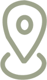

Locatie
Neveritaweg 59 1033WB Amsterdam
Neveritaweg 59 1033WB Amsterdam
In de omgeving van het restaurant heb je veel kunst die je kan bekijken. Hieronder een aantal afbeeldingen van wat daar te zien is.
Ook heb je daar eens in de maand een tweedehands markt in de IJ-hallen, waar je voor weinig geld heel veel kleding kan vinden.